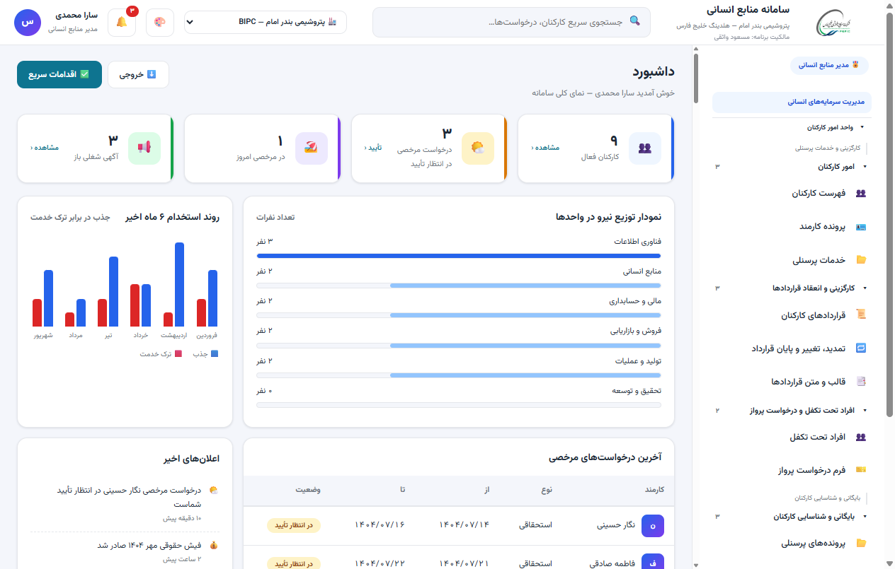
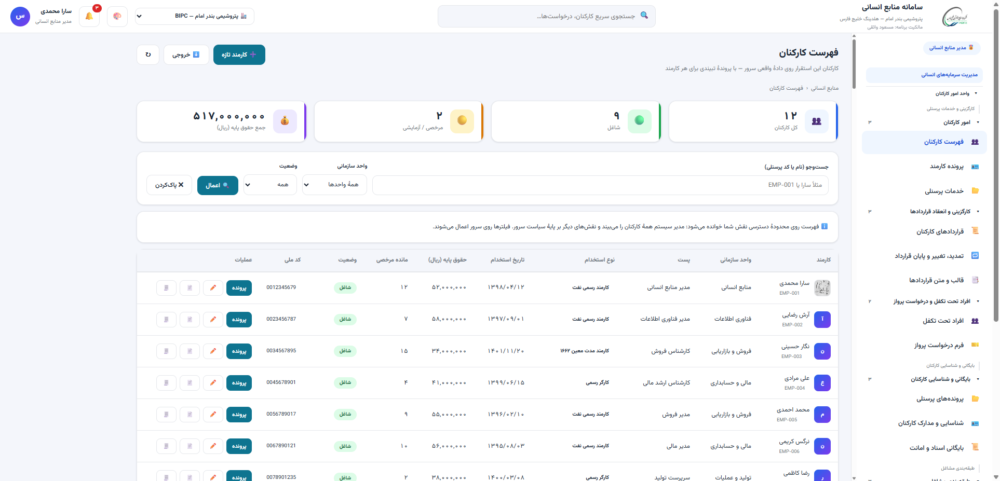
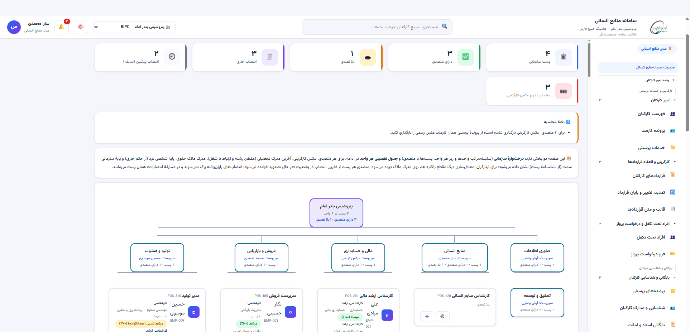
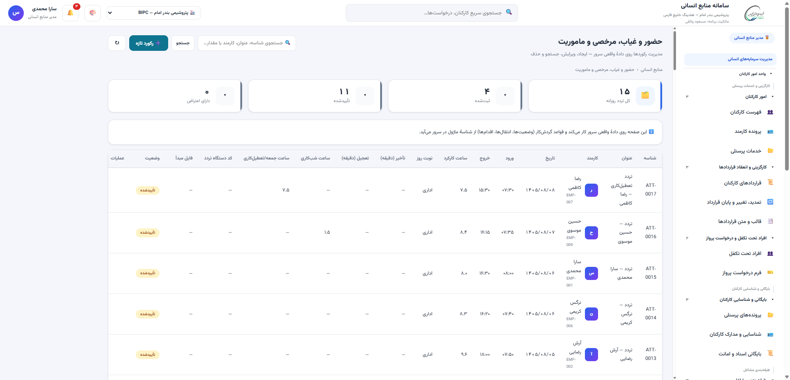
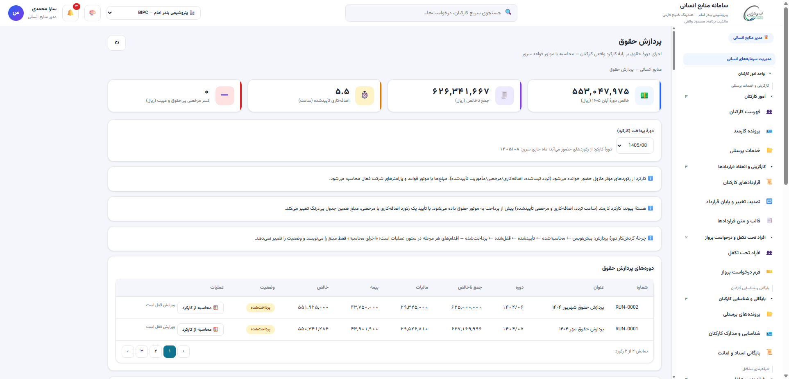
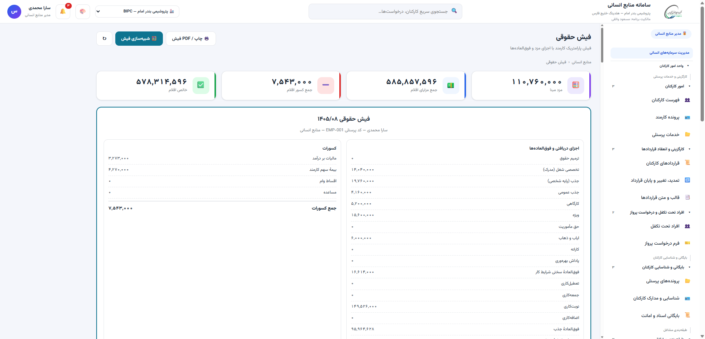
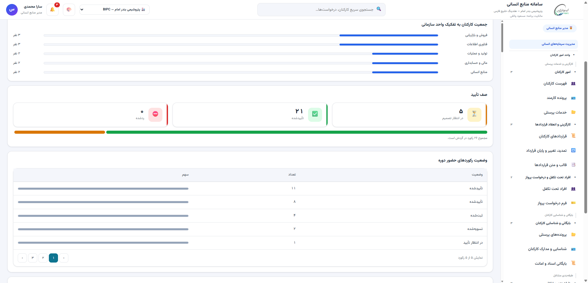
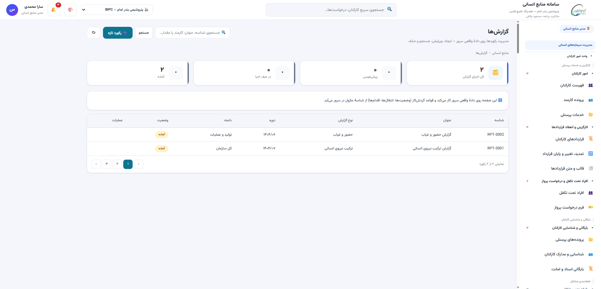
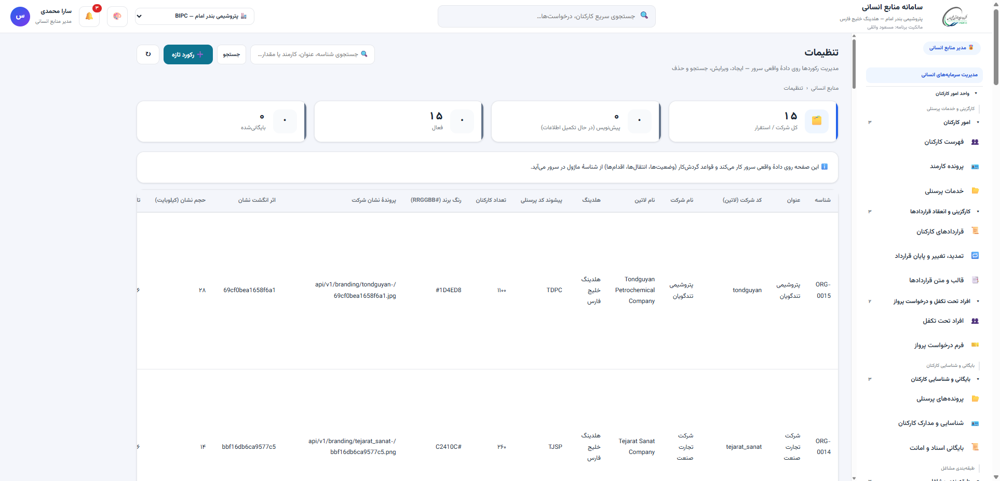

نسخهٔ سازمانی، مانیفستمحور و پارامتریک
سند معرفی سامانه و نرمافزار · نسخهٔ ارائه
سامانهٔ جامع
منابع انسانی
یک سامانهٔ واحد برای کل چرخهٔ منابع انسانی: از پروندهٔ پرسنلی و قرارداد و حضور و غیاب تا مأموریت، حقوق و دستمزد، آییننامهٔ فوقالعادههای نفت، انتصاب و ترفیع، آمار مدیریتی و خروجیهای قانونی (بیمه، مالیات و پرداخت بانکی).
موضوع: معرفی قابلیتها، خروجیها، معماری فنی و مسیر استقرار — برای بررسی در جلسهٔ ارزیابی
یک سامانه، یک منبع حقیقت برای همهٔ دادههای منابع انسانی
امروز بیشتر سازمانها دادهٔ منابع انسانی را در چند فایل و چند نرمافزار جدا نگه میدارند؛ نتیجه آن است که هر گزارش، محاسبهای تازه میخواهد و هر محاسبه، عددی متفاوت میدهد. این سامانه بر یک قاعدهٔ ساده ساخته شده است: هر داده یک جای مشخص دارد و هر عدد یک محاسبهٔ واحد. همهٔ گزارشها، فیشها و فایلهای قانونی از همان یک محاسبه ساخته میشوند.
🎯 مسیر واحد داده
پروندهٔ کارمند، قرارداد، کارکرد، مرخصی، مأموریت، حکم و پرداخت در یک زنجیره به هم متصلاند؛ تغییر هر حلقه، حلقههای بعدی را بهروز میکند — بدون بازسازی دستی.
⚖️ قاعده در دامنه، نه در فرم
قواعد حقوق، کارکرد، بیمه و آییننامهٔ فوقالعادهها در لایهٔ دامنه اجرا میشوند؛ رابط کاربری فقط نمایش میدهد. پیامهای خطا فارسی و دقیقاند.
🏢 چندشرکتی از روز اول
پانزده استقرار شرکتی با پارامترهای مستقل (ساعت کار، روز پرداخت، نرخها، ارز، تقویم) — بدون نصب نسخهٔ جدا برای هر شرکت.
📄 خروجیهای آمادهٔ ارائه
فیش حقوقی، حکم، گواهی اشتغال، قرارداد، لیست و فایل بیمه، لیست مالیات، فایل پرداخت بانکی و گزارشهای مدیریتی — همه از دادهٔ همان دوره.
همهٔ اعداد این سند از مانیفستهای خود سامانه استخراج شده است؛ مرز ماژولها، صفحهها و پارامترها با آنچه در نرمافزار اجرا میشود یکی است.
دو حوزه، ده اداره، سی ماژول، صد و بیست صفحه
ساختار سازمانی سامانه از ساختار واقعی ادارهٔ منابع انسانی گرفته شده است: هر اداره زیرواحدهای خودش را دارد و هر زیرواحد ماژولهایش را. منو، دسترسی و مستندات فارسی از همین ساختار ساخته میشوند.
👔 مدیریت سرمایههای انسانی
راهبری ادارات منابع انسانی: امور کارکنان، برنامهریزی نیروی انسانی، روابط کار و مددکاری، آموزش، آمار و برونسپاری. ۸ اداره.
🏛 حوزهٔ ستادی سازمان
داشبورد مدیریتی و تنظیمات سامانه (کاربران، نقشها، پارامترها، پروفایل شرکتها و حسابرسی). ۲ اداره.
منوی چهارسطحی
منو بهصورت «حوزهٔ سازمانی ← اداره ← زیرواحد ← ماژول ← صفحه» سازمان یافته است. «زیرواحد» فقط گروهبندی منو است؛ مرز دسترسی و منطق، همان ماژول است.
ادارات و وظایف هر اداره در سامانه
وظایف هر اداره در سامانه ثبت شده است و مبنای ساخت منو، دسترسیها و مستندات فارسی است. جدول زیر از مانیفست ساختاری سامانه تولید شده است.
| اداره | حوزه | زیرواحدها | گسترهٔ وظایف |
|---|---|---|---|
| داشبورد | حوزهٔ ستادی سازمان | — | نمای کلی شاخصهای سازمان و واحد بر پایهٔ نقش کاربر |
| واحد امور کارکنان | مدیریت سرمایههای انسانی | کارگزینی و خدمات پرسنلی، بایگانی و شناسایی کارکنان، طبقهبندی مشاغل و ۲ زیرواحد دیگر | کارگزینی و خدمات پرسنلی: پرونده، مدارک، گواهی اشتغال، تسویهحساب و پاسخ به… |
| واحد برنامهریزی نیروی انسانی | مدیریت سرمایههای انسانی | ساختار سازمانی و تشکیلات، انتصابات، ترفیعات و کارراههٔ شغلی، تأمین و جذب نیرو و ۱ زیرواحد دیگر | انتصابات و ابلاغهای سازمانی |
| واحد روابط کار و مددکاری اجتماعی | مدیریت سرمایههای انسانی | کمیتهٔ انضباط کار، شکایات و امور ایثارگران، مددکاری اجتماعی و ۱ زیرواحد دیگر | کمیتهٔ انضباط کار: پروندهها، جلسات و آرای انضباطی |
| واحد هماهنگی آموزش | مدیریت سرمایههای انسانی | چرخهٔ آموزش: برنامهریزی، نیازسنجی، اجرا و سوابق | از برنامهریزی آموزشی تا اجرا و هماهنگی اجرای دورههای آموزشی |
| واحد آمار و گزارشات | مدیریت سرمایههای انسانی | آمار، پایش و تأیید اطلاعات پایه، جابهجایی و معرفی کارکنان، گزارشهای مدیریتی | بررسی و تأیید حضور و غیاب و تردد، اطلاعات پایهٔ حقوق و مزایا، مرخصیها… |
| واحد برونسپاری | مدیریت سرمایههای انسانی | کنترل حقوق و تحلیل نیروهای ارکان ثالث، پروندههای سخت و زیانآور و تأمین اجتماعی | کنترل حقوق و دستمزد نیروهای ارکان ثالث و پیمانکاری |
| واحد مطالعات منابع انسانی | مدیریت سرمایههای انسانی | مطالعات و پژوهش، نظرسنجی و جو سازمانی، شاخصها و نظام پیشنهادها | مطالعات و پژوهشهای منابع انسانی زیر نظر مدیریت سرمایههای انسانی |
| تنظیمات سامانه | حوزهٔ ستادی سازمان | کاربران و دسترسیها، پارامترها و پروفایل شرکتها، پایش و حسابرسی | کاربران، نقشها و ماتریس دسترسی |
| واحد امور ورزش | مدیریت سرمایههای انسانی | رشتهها و برنامههای ورزشی، رویدادها و مسابقات ورزشی | برنامهریزی و اجرای فعالیتهای ورزشی کارکنان و خانوادهٔ آنان |
جمع: ۲ حوزه، ۱۰ اداره و ۲۷ زیرواحد. وظایف هر اداره مبنای ساخت منو، دسترسیها و مستندات فارسی است.
یک نصب، چند شرکت، پارامترهای مستقل
هر شرکت یک «استقرار» است: نام و نشان، کد پرسنلی، رنگ برند، تقویم، ارز، هفتهٔ کاری، ادارات فعال، ماژولهای خاموش و بازنویسی پارامترها. تغییر اینها داده است، نه کد؛ پس انتشار نسخهٔ تازه لازم نیست و هر شرکت میتواند قاعدهٔ خودش را داشته باشد.
| # | شرکت | هلدینگ | کد | نفرات |
|---|---|---|---|---|
| ۱ | پتروشیمی بندر امام | هلدینگ خلیج فارس | BIPC | ۴٬۲۰۰ |
| ۲ | ستاد هلدینگ خلیج فارس | هلدینگ خلیج فارس | PGH | ۳۲۰ |
| ۳ | شرکت پتروشیمی نمونه | هلدینگ نمونه | SPC | ۸۵۰ |
| ۴ | شرکت خدمات و پیمانکاری نمونه | هلدینگ نمونه | CSC | ۱٬۵۰۰ |
| ۵ | پتروشیمی بوعلی سینا | هلدینگ خلیج فارس | BASP | ۹۵۰ |
| ۶ | پتروشیمی فجر انرژی | هلدینگ خلیج فارس | FJRE | ۱٬۲۰۰ |
| ۷ | پتروشیمی تندگویان | هلدینگ خلیج فارس | TDPC | ۱٬۱۰۰ |
| ۸ | پتروشیمی اروند | هلدینگ خلیج فارس | ARPC | ۱٬۴۰۰ |
| ۹ | پتروشیمی نوری | هلدینگ خلیج فارس | NRPC | ۹۰۰ |
| ۱۰ | پتروشیمی بیدبلند | هلدینگ خلیج فارس | BBPC | ۱٬۰۵۰ |
| ۱۱ | پتروشیمی گچساران | هلدینگ خلیج فارس | GCPC | ۷۰۰ |
| ۱۲ | شرکت رهآوران فنون پتروشیمی | هلدینگ خلیج فارس | RFPC | ۴۲۰ |
| ۱۳ | شرکت بازرگانی پتروشیمی | هلدینگ خلیج فارس | PCTC | ۳۸۰ |
| ۱۴ | شرکت تجارت صنعت | هلدینگ خلیج فارس | TJSP | ۲۶۰ |
| ۱۵ | پتروشیمی مارون هلدینگ مارون | هلدینگ پتروشیمی مارون | MRPC | ۱٬۳۰۰ |
مجموع نیروی انسانی استقرارهای ثبتشده بیش از ۱۶ هزار نفر است. هر استقرار میتواند پارامترهای سازمانی را برای خودش بازنویسی کند (نمونهٔ بندر امام: ساعت موظفی ۱۷۶ ساعت، مرخصی ۲۶ روز، کنترل بیمهٔ ارکان ثالث فعال).
پروفایل استقرار پتروشیمی مارون در سامانه
سامانه همین امروز یک استقرار کامل برای پتروشیمی مارون دارد: همهٔ ادارات فعال، همهٔ ماژولها روشن و پارامترها بر پایهٔ مقررات منابع انسانی صنعت پتروشیمی تنظیمشده. این پروفایل، نقطهٔ شروع پایلوت است.
🗓 تقویم و هفتهٔ کاری
- تقویم رسمی: شمسی (جلالی)
- هفتهٔ کاری: شنبه تا چهارشنبه تماموقت، پنجشنبه نیمهوقت
- شروع سال مالی: ۰۱/۰۱
- منطقهٔ زمانی: Asia/Tehran
💰 پول و پرداخت
- واحد پول: ریال
- پیشفرض مأموریت خارجی: یورو
- نرخ تسعیر یورو، دلار، درهم و پوند در پارامترها
- روز پرداخت حقوق: پارامتر مستقل هر شرکت
✅ آماده برای پایلوت
- ۱۰ اداره و ۲۷ زیرواحد فعال
- نظام پرداخت صندوق نفت روشن
- پایش ارکان ثالث و مشاغل سخت و زیانآور
- نشان و QR اسناد قابل تنظیم
🏭 زمینهٔ شرکتی
مارون، بزرگترین تولیدکنندهٔ اتیلن کشور در منطقهٔ ماهشهر و هلدینگ مستقل پتروشیمی مارون است. ساختار سامانه (ادارات، زیرواحدها و قواعد) با همین ساختار تنظیم شده است.
مسیر پیشنهادی: پایلوت روی یک اداره (امور کارکنان و جبران خدمات) در یک دورهٔ حقوق، سپس گسترش به بقیهٔ ادارات. جزئیات در بخش «مسیر استقرار».
سی ماژول عملیاتی سامانه
هر ماژول یک مرز مشخص دارد: موجودیتهای داده، صفحهها، سرویسهای API و نقشهای مجاز. جدول زیر از مانیفست ماژولها تولید شده است.
| # | ماژول | اداره | صفحه | مسیر API |
|---|---|---|---|---|
| ۱ | داشبورد | داشبورد | ۱ | /api/v1/dashboard |
| ۲ | امور کارکنان | واحد امور کارکنان | ۳ | /api/v1/employee |
| ۳ | کارگزینی و انعقاد قراردادها | واحد امور کارکنان | ۳ | /api/v1/contracts |
| ۴ | افراد تحت تکفل و درخواست پرواز | واحد امور کارکنان | ۲ | /api/v1/personnel |
| ۵ | بایگانی و شناسایی کارکنان | واحد امور کارکنان | ۳ | /api/v1/archive |
| ۶ | طبقهبندی مشاغل | واحد امور کارکنان | ۶ | /api/v1/jobclass |
| ۷ | حضور و غیاب، مرخصی و ماموریت | واحد امور کارکنان | ۷ | /api/v1/attendance |
| ۸ | حقوق و دستمزد (جبران خدمات) | واحد امور کارکنان | ۱۱ | /api/v1/payroll |
| ۹ | احکام حقوق و گواهی اشتغال | واحد امور کارکنان | ۲ | /api/v1/salary_admin |
| ۱۰ | رفاه، سرویس مدارس و اسکان | واحد امور کارکنان | ۵ | /api/v1/welfare |
| ۱۱ | کارتهای رفاهی و شارژ (پتروکارت، نفتکارت) | واحد امور کارکنان | ۶ | /api/v1/cards |
| ۱۲ | پاداش تحصیلی فرزندان ممتاز | واحد امور کارکنان | ۳ | /api/v1/education_bonus |
| ۱۳ | پاداشها | واحد امور کارکنان | ۳ | /api/v1/bonus |
| ۱۴ | امور وام و بازنشستگی | واحد امور کارکنان | ۳ | /api/v1/loans |
| ۱۵ | ساختار سازمانی و تشکیلات | واحد برنامهریزی نیروی انسانی | ۲ | /api/v1/orgstructure |
جمع: ۳۰ ماژول، ۱۲۰ صفحه و ۱۰۸ موجودیت داده. «صفحه» یعنی شمار صفحههای کاربری همان ماژول.
ادامهٔ فهرست ماژولها
| # | ماژول | اداره | صفحه | مسیر API |
|---|---|---|---|---|
| ۱۶ | انتصابات، ترفیعات و کارراههٔ شغلی | واحد برنامهریزی نیروی انسانی | ۴ | /api/v1/career |
| ۱۷ | تأمین و جذب نیرو | واحد برنامهریزی نیروی انسانی | ۴ | /api/v1/recruitment |
| ۱۸ | مدیریت عملکرد | واحد برنامهریزی نیروی انسانی | ۳ | /api/v1/performance |
| ۱۹ | کمیتهٔ انضباط کار | واحد روابط کار و مددکاری اجتماعی | ۲ | /api/v1/discipline |
| ۲۰ | شکایات و امور ایثارگران | واحد روابط کار و مددکاری اجتماعی | ۲ | /api/v1/grievances |
| ۲۱ | مددکاری اجتماعی | واحد روابط کار و مددکاری اجتماعی | ۲ | /api/v1/socialwork |
| ۲۲ | درمان، معاینات دورهای و خدمات درمانی | واحد روابط کار و مددکاری اجتماعی | ۴ | /api/v1/medical |
| ۲۳ | هماهنگی آموزش | واحد هماهنگی آموزش | ۵ | /api/v1/training |
| ۲۴ | آمار و پایش اطلاعات پایه | واحد آمار و گزارشات | ۷ | /api/v1/statistics |
| ۲۵ | جابهجایی و معرفی کارکنان | واحد آمار و گزارشات | ۲ | /api/v1/moves |
| ۲۶ | گزارشها | واحد آمار و گزارشات | ۳ | /api/v1/reports |
| ۲۷ | برونسپاری و نیروهای ارکان ثالث | واحد برونسپاری | ۴ | /api/v1/outsourcing |
| ۲۸ | مطالعات منابع انسانی | واحد مطالعات منابع انسانی | ۴ | /api/v1/hrstudies |
| ۲۹ | تنظیمات | تنظیمات سامانه | ۱۲ | /api/v1/settings |
| ۳۰ | امور ورزش | واحد امور ورزش | ۲ | /api/v1/sports |
امکاناتی که در همهٔ ماژولها جریان دارند
اینها «یک صفحه» نیستند؛ قاعدههای مشترک سامانهاند که هر ماژول از آنها ارث میبرد. همین لایهٔ مشترک است که کار را از «چند فرم جداگانه» به «یک سامانه» تبدیل میکند.
⚙️ موتور مشترک رکورد
یک موتور واحد برای همهٔ انواع رکورد: پیشنویس ← فعال ← بایگانی؛ اعتبارسنجی، سابقهٔ تغییرات بدون حذف، و فهرست/جستوجو/پالایه برای هر نوع داده.
🔁 گردشکار چندمرحلهای
هر گردش، چرخهٔ وضعیت روشن دارد: در انتظار تأیید، تأیید، رد، باطل، پایانیافته. اثر هر اقدام در سابقه با کاربر و تاریخ شمسی ثبت میشود.
⚖️ قواعد در دامنه
قاعده در لایهٔ دامنه اجرا میشود و پیام خطای فارسی و دقیق برمیگرداند؛ فیلد همانجای فرم نشان داده میشود. هیچ قاعدهای در رابط کاربری تکرار نشده است.
📊 فهرست، برش و خروجی
هر ماژول فهرست رکوردها را با پالایه و صفحهبندی دارد، جمعبندی کارتها را نشان میدهد و خروجی CSV/اکسل یا سند چاپی میدهد.
🔐 دسترسی در سه سطح
هر نقش، در هر ماژول یکی از سه دامنهٔ «همه»، «واحد خودش» یا «رکورد خودش» را میبیند — همراه با کنشهای مجاز (مشاهده/ایجاد/حذف/تأیید/مدیریت/گزارش).
🧾 سند و سریال
هر سند چاپی سریال یکتا دارد (قرارداد، حکم، فیش، گواهی) و هر چاپ در لاگ حسابرسی ثبت میشود؛ QR سند به صفحهٔ تأیید برمیگردد.
سامانه برای سازمان چندشرکتی و مقررات متغیر
🏢 چندشرکتی با یک کد
ماژول مشترک یک بار کد دارد و در منوی چند اداره دیده میشود. شرکت فعال از نوار بالا عوض میشود و منو، پارامترها و دادهٔ همان استقرار بازسازی میشوند.
🎛 پارامتریک کامل
۵۳ پارامتر سازمانی در ۹ گروه (حقوق، مرخصی، مأموریت، انتصاب، صندوق نفت، بیمه، برونسپاری، گزارش، مطالعات) — تغییر مقدار، بدون انتشار نسخهٔ تازه.
🈯 فارسیسازی راستبهچپ
کل رابط فارسی و راستچین با قلم وزیرمتن؛ ارقام در متن فارسی و در داده لاتین (تاریخ شمسی YYYY/MM/DD، مبالغ و کدها). پیامهای خطا فارسی.
🧩 مانیفستمحور
برای هر ماژول یک مانیفست: اداره، زیرواحد، صفحهها، موجودیتها، نقشها و مسیر API. منو، دسترسی، انواع داده و مستندات فارسی از همان مانیفست ساخته میشوند.
📚 مستندات صفحهبهصفحه
برای ۱۲۰ صفحه، مستند فارسی تولید میشود: هدف صفحه، نقشهای مجاز، اقلام و قواعد؛ همان مستند در راهنمای شناور منو هم دیده میشود.
🩺 پایش و حسابرسی
لاگ حسابرسی برای اقدامهای حساس، ثبت کاربر و زمان، و صفحهٔ پایش خطاهای تبادل داده و رکوردهای ناقص.
نظام پرداخت صندوق نفت؛ محاسبهٔ زنجیرهای و پارامتریک
حقوق در این نظام زنجیرهای ساخته میشود: هر مبنا از مرحلهٔ قبل محاسبه میشود و هیچ نسبتی در کد سختکد نشده است؛ همهٔ درصدها پارامتر سازمانیاند.
فوقالعادهها و ضرایب (پارامتر سازمانی)
🌡 بدی آب و هوا
۲۵٪ از پایهٔ حقوق (مناطق گرمسیری)
🏜 محرومیت
بر پایهٔ جدول محل سکونت؛ ۲۵٪ تا ۳۷.۵٪
⭐ ویژه (ردیف ۳)
۳۰٪ از مبنای فوقالعادهها
🏗 کارگاهی
۱۰٪ از مبنا (پارامتر مستقل)
🏭 مراکز تولیدی فرآورشی
۳۰٪ از مبنا
🌙 نوبتکاری
۳۵٪ به نسبت روزهای نوبتکاری
🎓 تخصصی بر مدرک
دیپلم ۱۷.۵٪ · فوقدیپلم ۲۷٪ · کارشناسی ۳۸.۵٪ · ارشد ۴۶.۲٪ · دکتری ۵۴٪
⏱ اضافهکاری
۰.۰۱۴ × A روزکار · ۰.۰۱۶ × A نوبتکار
➖ کسور
سهم کارمند ۶٪ · سهم کارفرما ۱۹٪ (صندوق بازنشستگی نفت) · معافیت مالیاتی ۲۴٬۰۰۰٬۰۰۰ ریال با مالیات پلهای
خروجی: «فیش حقوقی صندوق نفت» با تفکیک همهٔ اجزا و منبع هر مقدار. هر خانهٔ جدولهای محل سکونت و پایهٔ سمت هم قابل بازنویسی است (oilpay.site.* و oilpay.grade.*).
جدولهای آییننامه، آماده و قابل ویرایش
جدولهای محل سکونت و پایهٔ سمت در سامانه ثبت شدهاند و هر خانه را میتوان برای هر شرکت بازنویسی کرد؛ بدون تغییر کد و بدون نسخهٔ تازه.
محل سکونت — محرومیت / صرف وقت روزکار / نوبتکار
| محل | محرومیت | روزکار | نوبتکار |
|---|---|---|---|
| ماهشهر | ۲۵٪ | ۹.۵٪ | ۱۰.۵٪ |
| بندر امام خمینی | ۲۵٪ | ۹.۵٪ | ۱۰.۵٪ |
| جراحی و شهرک بعثت | ۲۷.۵٪ | ۱۶.۵٪ | ۱۸٪ |
| شادگان | ۳۰٪ | ۲۷.۵٪ | ۲۹٪ |
| امیدیه | ۳۰٪ | ۳۱٪ | ۳۳٪ |
| رامشیر | ۳۰٪ | ۲۵٪ | ۲۷٪ |
| رامهرمز | ۳۷.۵٪ | ۲۵٪ | ۲۷٪ |
| آبادان | ۲۷.۵٪ | ۳۷.۵٪ | ۴۰٪ |
پایهٔ سمت (جدول ۳)
| پایه | درصد پایهٔ سمت |
|---|---|
| ۶ تا ۱۰ | ۸٪ + ۴٪ |
| ۱۱ تا ۱۵ | ۸٪ + ۸٪ |
| ۱۶ | ۸٪ + ۱۵٪ |
| ۱۷ | ۸٪ + ۲۰٪ |
| A | ۸٪ + ۲۵٪ |
| B | ۸٪ + ۳۵٪ |
| C | ۸٪ + ۶۰٪ |
| D | ۸٪ + ۸۰٪ |
| OD | ۸٪ + ۱۰۰٪ |
برای مارون، محل سکونت «ماهشهر» است؛ با همین جدول، محرومیت ۲۵٪ و صرف وقت روزکار ۹.۵٪ و نوبتکار ۱۰.۵٪ بهصورت خودکار اعمال میشود — و در صورت ابلاغ جدول تازه، فقط پارامتر عوض میشود.
مأموریت: از محاسبهٔ فوقالعاده تا تسویهٔ اسناد
مأموریت در سامانه یک گردش کامل است: ثبت درخواست، محاسبهٔ فوقالعاده بر پایهٔ قواعد، تأیید، و در پایان تسویه — با تفکیک ریالی و ارزی.
🧮 محاسبهٔ روزانه
- نرخ روزانه پایه: ۴٬۵۰۰٬۰۰۰ ریال (پارامتر)
- عوامل وعده: صبحانه ۱۰٪ · نهار ۳۵٪ · شام ۳۵٪ · خواب ۲۰٪
- هتل/مهمانسرا: سهم خواب حذف و هزینهٔ واقعی جایگزین
- امکانات شخصی ۱۰٪ · کرایهٔ کیلومتری ۵۰٬۰۰۰ ریال
🌍 مأموریت خارج از کشور
- ارز پیشفرض: یورو (دلار، درهم و پوند هم پشتیبانی میشود)
- فوقالعادهٔ ارزی روزانه: ۱۰۰ واحد ارز
- نرخ تسعیر پارامتریک: یورو ۹۰۰٬۰۰۰ · دلار ۸۳۰٬۰۰۰ · درهم ۱۹۲٬۰۰۰ · پوند ۱٬۰۵۰٬۰۰۰ ریال
- اسناد ارزی جدا از ریالی تسویه میشوند
🩺 انواع مأموریت
- مأموریت اداری
- اعزام پزشکی (بیمار / همراه بیمار)
- مأموریت خارج از کشور
- سهم وعدههای همراه بیمار مستقل است
🔄 گردش و تسویه
- وضعیتها: پیشنویس · در انتظار تأیید · تأییدشده · تسویهشده · ردشده
- اقدامها: ارسال برای تأیید · تأیید · ثبت تسویه · رد
- تسویه فقط اسناد تأییدشده را جمع میزند
- هر سند به کارمند و شمارهٔ مأموریت متصل است
فایلهای پیادهسازی: rules/mission.go، rules/mission_settlement.go، attendance/missioncalc.go و صفحهٔ «فرم محاسبهٔ مأموریت».
انتصاب و ترفیع با ده شرط و چهار سطح تصویب
ترفیع و انتصاب در سامانه یک فرآیند کنترلشده است، نه یک ثبت ساده: شرایط احراز، سابقه، امتیاز ارزیابی، ظرفیت پست و تعهد خدمت پیش از تصویب بررسی میشوند.
۱️⃣ سابقهٔ گروه
حداقل ۲۴ ماه در گروه شغلی فعلی
۲️⃣ امتیاز ارزیابی
حداقل ۷۵ از ۱۰۰ در ارزیابی عملکرد
۳️⃣ اندازهٔ جهش
حداکثر یک پله در هر ترفیع
۴️⃣ تعهد خدمت
۲۴ ماه برای گروههای مدیریتی
۵️⃣ شرط معادل
پذیرش شرایط احراز معادل، در صورت وجود
۶️⃣ ظرفیت پست
کنترل خالیبودن پست در تشکیلات
زنجیرهٔ تصویب و ابلاغ
از «پلهٔ ۴ گروه شغلی» به بالا تصویب کمیته و از «پلهٔ ۵» به بالا تصویب مدیرعامل لازم است (پارامتر committeeRank و ceoRank). ابلاغ تنها از وضعیت «تصویبشده» ممکن است و پس از آن سه اثر ثبتی دارد: صدور ابلاغ در پروندهٔ کارمند، ثبت تصدی پست در تشکیلات، و ثبت سابقه با شمارهٔ ابلاغ و تاریخ اجرا.
📋 وضعیتهای فرآیند
پیشنویس · در انتظار تصویب · تصویبشده · ابلاغشده و اجراشده · ابلاغ باطلشده · لغوشده
🖊 اقدامهای مجاز
ارسال برای تصویب · امضای سطح تصویب · تصویب نهایی · بازگشت برای اصلاح · اجرا و ابلاغ · ابطال ابلاغ · لغو
کارکرد، روز به روز روی تقویم؛ آمار، برش به برش
🗓 تقویم کارکرد
کارکرد هر کارمند روی تقویم ماه دیده میشود؛ هر روز یکی از وضعیتهای زیر را دارد و رکورد «در انتظار تأیید» در جمع کارکرد شمرده نمیشود:
- تعطیل · آخر هفته · مرخصی · مأموریت
- ترکیبی · کارکرد · ناقص/غایب · بدون شیفت
جمع ماه: روزهای کارکرد، مرخصی، مأموریت، تعطیل، مناسبت، اضافهکاری، تأخیر و رکوردهای معوق.
📊 سکشن آمار
برشهای آماری روی بُعدهای سازمانی، با جدول توافقی، هیتمپ، نمودار میلهای و دایرهای و خروجی CSV:
- سن · سابقهٔ خدمت · تحصیلات
- واحد سازمانی · نوع استخدام
- جنسیت · وضعیت خدمت
در پروندهٔ کارمند هم جنسیت و تاریخ تولد (شمسی) ثبت میشود و مبنای همین برشهاست.
🧾 چرا این دو به هم وصلاند؟
هر برش آماری از همان رکوردهای تأییدشدهٔ حضور، مرخصی و مأموریت ساخته میشود که مبنای حقوق هم هستند. پس عدد گزارش مدیریتی و عدد فیش حقوقی از یک منبع میآیند — همان چیزی که در سامانههای جزیرهای هیچوقت به دست نمیآید.
پنج سند رسمی، با متن قابل ویرایش و QR تأیید
سندهای چاپی از دادهٔ همان رکورد ساخته میشوند، سریال یکتا دارند و متنشان از پنل پارامتریک قابل ویرایش است — بدون تغییر کد.
| سند | ماژول | سریال | کاربرد |
|---|---|---|---|
| قرارداد کار | کارگزینی و قراردادها | CRT-سال-کد | انعقاد قرارداد مدت موقت و دائم |
| حکم حقوق | احکام حقوق | DEC-سال-کد | صدور، اصلاح و ابلاغ حکم |
| فیش حقوقی | حقوق و دستمزد | PAY-سال-کد | تحویل به کارمند با تفکیک اجزا |
| گواهی اشتغال به کار | امور کارکنان | — | ارائه به بانک، سفارت و مراجع |
| فرم تعیین مدرک ملاک حقوق | بایگانی | DBAS-سال-کد | مبنای مدرک تحصیلی در حقوق |
✍️ متن ویرایشی
برای هر سند دو جای متن وجود دارد: «پاراگراف متن سند» و «یادداشت پای سند» (هر خط یک پاراگراف). جاینگهدارها مثل {{employee.fullName}} با دادهٔ رکورد پر میشوند.
🔗 QR و صفحهٔ تأیید
هر سند QR دارد که به صفحهٔ تأیید برمیگردد: نوع سند، سریال و امضای HMAC. صفحهٔ تأیید اصالت سند را بدون ورود به سامانه نشان میدهد.
هر چاپ در لاگ حسابرسی ثبت میشود (اقدام document-print)؛ نسخهٔ چاپی با noindex / no-store سرو میشود تا در مرورگر بایگانی نشود.
خروجیهایی که به مراجع بیرونی میروند
همهٔ فایلهای زیر از همان دورهٔ پردازششدهٔ حقوق ساخته میشوند؛ جداول جمعبندی و فایل، هر دو در دسترساند و مبلغها با فیش همان کارمند یکی است.
| خروجی | قالب | مقصد / کاربرد |
|---|---|---|
| لیست بیمهٔ تأمین اجتماعی | CSV (UTF-8 + BOM) | ارسال ماهانه به تأمین اجتماعی |
| لیست مالیات حقوق | CSV (UTF-8 + BOM) | ارسال به سازمان امور مالیاتی |
| فایل پرداخت بانکی | CSV (UTF-8 + BOM) | بارگذاری در سامانهٔ بانک برای واریز حقوق |
| فایل شارژ کارتهای رفاهی | CSV / XLSX | ارسال به مالی و شرکت کارت |
| فایل پاداش تحصیلی | CSV | پرداخت پاداش فرزندان ممتاز |
| برش آماری | CSV | تحلیل در اکسل و گزارش مدیریتی |
| گزارش و داشبورد | چاپ / PDF | ارائه در جلسات مدیریتی |
| QR شرکت، کارمند و سند | SVG | نشان و شناسه روی اسناد |
ورود داده و تبادل
- فایل دستگاه تردد: کد دستگاه، تاریخ شمسی، ساعت و جهت ورود/خروج؛ با حالت «فقط بررسی» پیش از ثبت، سقف ۸ مگابایت و الگوی نمونهٔ دانلودی.
- تبادل داده: بارگذاری CSV / TXT / XLSX برای ۱۲ جدول پایه (شرکتها، کاتالوگها، واحدها و پستها، کارکنان، حسابهای بانکی، قراردادها، افراد تحت تکفل، احکام، پارامترهای حقوق، الگوهای نوبت، تخصیص نوبت، نگاشت کد دستگاه).
- اتصال مستقیم: خواندن از PostgreSQL / SQL Server / MySQL / Oracle برای مهاجرت از سامانهٔ پیشین.
هر نقش، همان چیزی را میبیند که باید
دسترسی در سامانه بر پایهٔ «نقش × ماژول × دامنهٔ داده × کنش» تعریف میشود. سه دامنه وجود دارد: همهٔ رکوردهای سازمان، رکوردهای واحد خود، و رکوردهای خودِ شخص.
| نقش | دامنهٔ داده | نکتهٔ کلیدی |
|---|---|---|
| مدیر سیستم | همه | تنها نقشی که کاربران، نقشها و دسترسیها را مدیریت میکند |
| مدیر منابع انسانی | همه | تأیید نهایی گردشها و اجرای ابلاغ انتصاب و ترفیع |
| کارشناس منابع انسانی | همه (عملیاتی) | کار روزمرهٔ کارگزینی، حقوق و رفاه؛ بدون کنش حذف |
| مدیر واحد | واحد خودش | در ۲۲ ماژول: تأیید مرخصی، مشاهدهٔ کارکنان و امور واحد |
| کارمند | رکورد خودش | در ۱۹ ماژول: پروندهٔ خود، درخواست مرخصی، فیش حقوقی، رفاه |
شش کنش دسترسی: مشاهده · ایجاد/ویرایش · حذف · تأیید · مدیریت · گزارش. ماتریس دسترسی در صفحهٔ «نقشها و دسترسیها» قابل مشاهده و تغییر است.
معماری سهلایه، مانیفستمحور
قواعد کسبوکار در یک لایهٔ مستقل و آزمونپذیر متمرکز است؛ رابط کاربری هیچ قاعدهای ندارد و سرور فقط همآهنگی و ذخیرهسازی میکند. نتیجه: یک قاعده، یک پیادهسازی، در همهٔ رابطها.
🦀 هستهٔ قواعد — Rust
محاسبهٔ حقوق، کارکرد، بیمه، مالیات، مأموریت، صندوق نفت و انتصاب؛ آزمونهای واحد برای هر قاعده. این لایه مرجع حقیقت قواعد است.
🐹 سرور مرجع — Go
۱۹۲ سرویس API، احراز هویت و نقشها، سندهای چاپی، فایلهای قانونی، تبادل داده و اتصال به پایگاهداده.
📱 رابط کاربری — وب و موبایل
نمونهٔ وب فارسی و راستچین برای ارزیابی سریع، و اپلیکیشن React Native برای کارکنان و مدیران؛ هر دو روی همان API.
چهار قاعدهٔ سخت معماری
- مانیفست، تنها منبع ساخت: منو، دسترسی، انواع داده و مستندات از یک مانیفست تولید میشوند؛ دستی ویرایش نمیشوند.
- رابط فقطنمایشی: هیچ قاعدهٔ کسبوکاری در رابط کاربری نیست.
- دادهٔ نمایشی، نه واقعی: محیط دمو با دادهٔ نمونه کار میکند و به دادهٔ واقعی سازمان دست نمیزند.
- قواعد آزمونشده: دروازهٔ بررسی، پیش از هر انتشار، مانیفستها و قاعدهها را اعتبارسنجی میکند.
| لایه | فناوری | نقش |
|---|---|---|
| هستهٔ قواعد | Rust | محاسبه، اعتبارسنجی و قاعدههای دامنه |
| سرور مرجع | Go | API، احراز هویت، اسناد و فایلها |
| پایگاهداده | PostgreSQL | ذخیرهسازی تراکنشی و پشتیبانگیری |
| رابطها | React Native · Web | نمایش فارسی و راستچین |
استقرار سازمانی روی زیرساخت موجود
سامانه در محیط سازمانی بدون نیاز به زیرساخت ویژه بالا میآید: یک پایگاهدادهٔ PostgreSQL و یک سرویس سرور، هر دو با راهاندازی خودکار پس از بوت.
🧱 راهاندازی خودکار
پایگاهداده بهصورت سرویس ویندوزی، سرور بهصورت تسک زمانبندیشده با محرک شروع سیستم؛ هر دو با سیاست راهاندازی دوباره پس از خطا.
💾 پشتیبان نسخهدار
برای هر نسخهٔ ارائه، یک بستهٔ پشتیبان: سورس، باینریهای تمیز، برونکشی داده و آرشیو فشرده با جمع کنترلی.
✅ راستیآزمایی بازگردانی
هر بسته پیش از تحویل روی یک پایگاهدادهٔ آزمایشی تازه بازگردانی و سطربهسطر با شمارش جداول مقایسه میشود.
🔌 نسخهٔ مستقل
در صورت نیاز، نسخهٔ قابل اجرا بدون پایگاهداده (همراه داده و راهنمای فارسی) برای ارائه و آموزش ساخته میشود.
نمونهٔ دموی زنده
نسخهٔ نمایشی روی همین رایانه با پنج حساب کاربری و رمز demo اجرا میشود:
| حساب | نقش | رمز |
|---|---|---|
| hr.manager | مدیر منابع انسانی | demo |
| hr.spec | کارشناس منابع انسانی | demo |
| line.mgr | مدیر واحد | demo |
| employee | کارمند | demo |
| admin | مدیر سیستم | demo |
ورود و نشان شرکت

- نشان و رنگ برند، دادهٔ همان استقرار شرکت است و پیش از ورود کاربر دیده میشود.
- پنج حساب نمونه برای ارزیابی سریع نقشها در دسترس است.
- هر شرکت میتواند نشان، رنگ و نام خودش را داشته باشد.
داشبورد مدیر منابع انسانی

- کارتها بر پایهٔ نقش کاربر تغییر میکنند؛ مدیر منابع انسانی تصویر کل سازمان را میبیند.
- اقدامهای در انتظار تأیید، یککلیک به کارتابل همان فرایند میرسند.
- نمودار توزیع نیرو در واحدها و روند استخدام ششماهه، از دادهٔ زندهٔ سامانه ساخته میشود.
فهرست کارکنان

- پالایه بر پایهٔ واحد، نوع استخدام، وضعیت و اقلام پرسنلی.
- جمعبندی بالای فهرست، عدد همان پالایهٔ فعال است، نه کل سازمان.
- ستونها شامل کد ملی، نوع استخدام، حقوق پایه و وضعیت خدمت است.
پروندهٔ کارمند

- هر زبانه دادهٔ خودش را دارد و سابقهٔ تغییرات بدون حذف ثبت میشود.
- عکس کارگزینی، قرارداد و اسناد در همان پرونده نگهداری میشود.
- جنسیت و تاریخ تولد (شمسی) مبنای برشهای آماری سازمان است.
ساختار سازمانی و پستها

- هر پست، متصدی و شرایط احراز خودش را دارد.
- انتصاب وقتی ثبت میشود که پست خالی و شرایط احراز برقرار باشد.
- تعداد پستهای بدون تصدی در همان صفحه پایش میشود.
تردد و کارکرد

- ورود فایل دستگاه تردد با حالت «فقط بررسی» پیش از ثبت.
- خطوط ناقص و تکراری در گزارش مغایرت میآیند و تردد تازه نمیسازند.
- رکورد در انتظار تأیید، در جمع کارکرد شمرده نمیشود.
تأیید مرخصی مدیر واحد

- دامنهٔ دادهٔ «واحد خود» در ۲۲ ماژول اعمال میشود.
- اثر تأیید، بیدرنگ روی ماندهٔ مرخصی کارمند دیده میشود.
- هر اقدام با کاربر و تاریخ شمسی در سابقهٔ گردش ثبت میشود.
قراردادها

- قرارداد مدت موقت و مدت دائم با وضعیتهای روشن.
- متن قرارداد از قالب قابل ویرایش ساخته میشود و سریال یکتا دارد.
- سرآمد قرارداد برای پیگیری تمدید در فهرست مشخص است.
پردازش دورهٔ حقوق

- پردازش دوره، همان محاسبهٔ واحدی است که فیش و فایلهای قانونی از آن ساخته میشوند.
- رکورد تأییدنشدهٔ کارکرد پیش از پردازش هشدار میدهد.
- خالص دوره، اضافهکاری و کسر مرخصی در همان صفحه جمعبندی میشود.
فیش حقوقی

- فیش عادی و فیش نظام پرداخت صندوق نفت، هر دو از یک سامانه.
- هر جزء قابل ردیابی است: از پارامتر و ضریب تا رکورد کارکرد.
- چاپ فیش با QR تأیید و ثبت در لاگ اسناد.
دورههای ارزیابی عملکرد

- امتیاز ارزیابی، شرط ورود به فرآیند ترفیع است (حداقل ۷۵ از ۱۰۰).
- ارزیابی در سه سطح سازمان، اداره و فرد قابل تعریف است.
- نتیجهٔ ارزیابی در پرونده و سابقهٔ کارمند میماند.
هماهنگی آموزش

- نیازسنجی و اولویتگذاری دورهها در همان چرخه.
- سوابق آموزشی و گواهینامهها به پروندهٔ کارمند متصل است.
- هماهنگی اجرای دورهها با ادارات درخواستکننده.
داشبورد آماری

- برشهای آماری روی سن، سابقه، تحصیلات، واحد، نوع استخدام و جنسیت.
- جدول توافقی، هیتمپ و نمودار میلهای و دایرهای با خروجی CSV.
- همهٔ اعداد از رکوردهای تأییدشدهٔ همان ماه ساخته میشوند.
پارامترهای حقوق

- ۵۳ پارامتر سازمانی در ۹ گروه، همه قابل بازنویسی برای هر شرکت.
- جدولهای آییننامهٔ نفت (محل سکونت و پایهٔ سمت) هم پارامتر مستقلاند.
- پارامتر سازمانی تغییر میکند؛ قاعده در لایهٔ دامنه ثابت میماند.
گزارشها

- گزارشساز بر پایهٔ اقلام، بدون نیاز به برنامهنویسی.
- گزارشهای مدیریتی برای جلسات، قابل چاپ و PDF.
- گزارشهای عملیاتی از همان دادهٔ ماژولها ساخته میشوند.
استقرار شرکتها و هلدینگها

- هر استقرار، پارامترها و ادارات فعال خودش را دارد.
- پروفایل پتروشیمی مارون (MRPC) با ۱۳۰۰ نفر و ۱۰ اداره در سامانه آماده است.
- تغییر شرکت فعال از نوار بالا، منو و دادهٔ همان استقرار را بازمیسازد.
شش گام از ارزیابی تا بهرهبرداری
پیشنهاد ما، شروع کوچک و قابلسنجش است: یک اداره، یک دورهٔ حقوق، و مقایسهٔ خروجی با روش دستی. گسترش به بقیهٔ ادارات بعد از تأیید صحت اعداد انجام میشود.
اجرای نسخهٔ نمایشی روی رایانهٔ جلسه؛ عبور از پنج نقش و دیدن خروجیهای واقعی (فیش، بیمه، مالیات، بانک).
ثبت پروفایل شرکت: ادارات فعال، پارامترهای حقوق و مرخصی، جدولهای محل سکونت و پایهٔ سمت، نشان و QR.
واحدها و پستها، کارکنان، حسابهای بانکی، قراردادها و افراد تحت تکفل — با فایل CSV/اکسل یا اتصال مستقیم به سامانهٔ پیشین.
اجرای یک دورهٔ کامل برای یک اداره؛ مقایسهٔ سطربهسطر خروجی بیمه، مالیات و فایل بانکی با روش فعلی.
آموزش کاربران کلیدی هر اداره (کارشناس، مدیر واحد، مدیر منابع انسانی) و تحویل مستندات فارسی صفحهبهصفحه.
فعالسازی تدریجی بقیهٔ ادارات، پشتیبانگیری دورهٔای نسخهدار و پایش کیفیت داده با گزارشهای سامانه.
معیار موفقیت پایلوت: مطابقت کامل مبلغ خالص حقوق، اقلام بیمه و مالیات و فایل بانکی با محاسبهٔ دستی — وگرنه علت اختلاف در سامانه ردیابی میشود.
تجربهٔ منابع انسانی، در خدمت طراحی سامانه
این سامانه را کسی طراحی کرده است که سالها خودش در ادارهٔ منابع انسانی کار کرده و صورتمسئله را از نزدیک میشناسد: از پروندهٔ پرسنلی و روابط کار تا حقوق، طبقهبندی مشاغل و ارزیابی سازمانی.
👤 سوابق اجرایی
- رئیس پرسنل پتروشیمی بندر امام
- رئیس امور کارکنان پتروشیمی بندر امام
- رئیس مطالعات و مقررات منابع انسانی
- ارزیاب EFQM و عضو تیم ارزیابی چند شرکت پتروشیمی
🧠 تخصصهای فنی منابع انسانی
- تسلط بر مدل ۳۴۰۰۰ منابع انسانی
- پیادهسازی نظامهای ۴P و G20 برای جبران خدمات
- طبقهبندی مشاغل در پتروشیمی بندر امام
- طراحی و پیادهسازی نظامهای جبران خدمات
- مدیریت عملکرد در سه سطح سازمان، اداره و فرد (مدل سیمرغ)
⏳ ۳۸ سال تجربه در حوزهٔ منابع انسانی
طراحی انواع سیستمهای منابع انسانی و پیادهسازی آن مدلها، همراه با تحلیل و برنامهنویسی همین سامانه — یعنی زنجیرهٔ «قاعدهٔ منابع انسانی ← مدل داده ← پیادهسازی نرمافزاری» یکجا و توسط یک نفر بسته میشود. همین ویژگی است که فاصلهٔ میان «آنچه مقررات میگوید» و «آنچه نرمافزار محاسبه میکند» را کم میکند.
جمعبندی
آنچه در یک جمله میتوان گفت
این سامانه، مقررات منابع انسانی صنعت پتروشیمی — از آییننامهٔ فوقالعادههای نفت تا مأموریت، انتصاب و ترفیع — را به یک محاسبهٔ واحد و قابل ردیابی تبدیل میکند؛ خروجی قانونیاش با فیش کارمند یکی است و پارامترهایش را مدیر منابع انسانی تغییر میدهد، نه برنامهنویس.